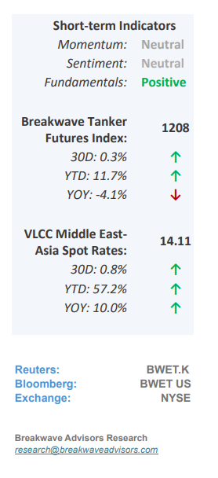
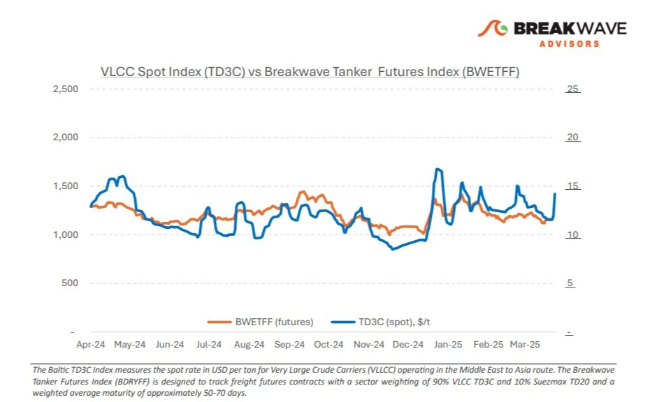
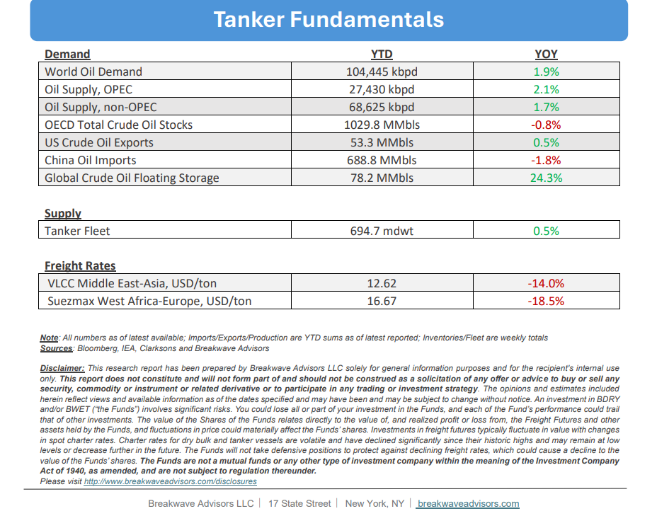

•Spot VLCC Rate Jump as Uncertainty Increases– In the lead-up to Easter holidays, VLCC spot freight rates on the Middle East Gulf - China route experienced a notable firming trend, with rates rising sharply on April 17 to one-month highs. This tightening in the freight market was driven by a combination of pre-holiday cargo demand and speculative activity linked to renewed U.S. sanctions on Iranian crude exports. These proposed and implemented sanctions have strained global supply chains, prompting Asian refiners to diversify sourcing strategies. The resulting longer-haul voyages have increased ton-mile demand, indirectly supporting VLCC earnings. Meanwhile, VLCC spot rates on the West Africa–China route also saw modest improvements. On the macroeconomic front, stronger-than-expected industrial output in China and India led to upward revisions in energy demand forecasts, although the main oil market reports continue to paint a lackluster picture when it comes to future oil demand. Looking ahead, continued volatility in oil markets—fueled by geopolitical instability and shipping disruptions—could drive freight rates while the upcoming additional oil supply from OPEC+ should provide some foundational support for the crude oil freight market. The OPEC+ policy meeting in May will be pivotal, as potential production adjustments may shape VLCC market dynamics in Q2 2025.

•Oil Prices Bounce off Multi-year Lows as Geopolitical Premium Resurfaces– Following one of the most dramatic selloffs in recent memory, oil prices have staged a modest recovery and are currently trading solidly above the $60/bbl level. Although demand fundamentals remain weak and additional upcoming supply seems incomparable with market balance, the shifting geopolitics surrounding Iran’s exports as well as the ongoing trade war between the US and various nations have once again added a geopolitical premium to the price of oil, in our view. IEA, EIA and OPEC reduced their 2025 demand forecasts, which was widely expected given the current economic turmoil and uncertainty that tariffs have introduced to the global economy. Despite a sharply weaker US dollar - the uncertainty surrounding the global economy remains the main driver of prices and thus the most important determinant of freight rates for crude oil tankers. The oil futures curve remains in backwardation, although at much lower levels versus recent history. As we look into the near future, we expect further weakening into the oil’s trading range and the mid $50/bbl should signify the lower end of such range. Any conflict in the Middle East as a result of the current US-Iran negotiations should naturally lead to higher oil prices but also push spot tanker rates higher as a flight to safety takes place and traders seek the security of tankers.
•Our Long-term View– The tanker market is recovering from a long period of staggered rates as the growth in new vessel supply shrinks while oil demand remains elevated in line with the global economy. A historically low orderbook combined with favorable shifting trade patterns should continue to support increased spot rate volatility, which combined with the ongoing geopolitical turmoil, should sustain freight rates in the medium to long term.


Subscribe: